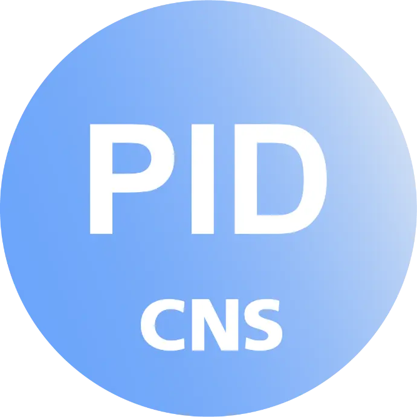
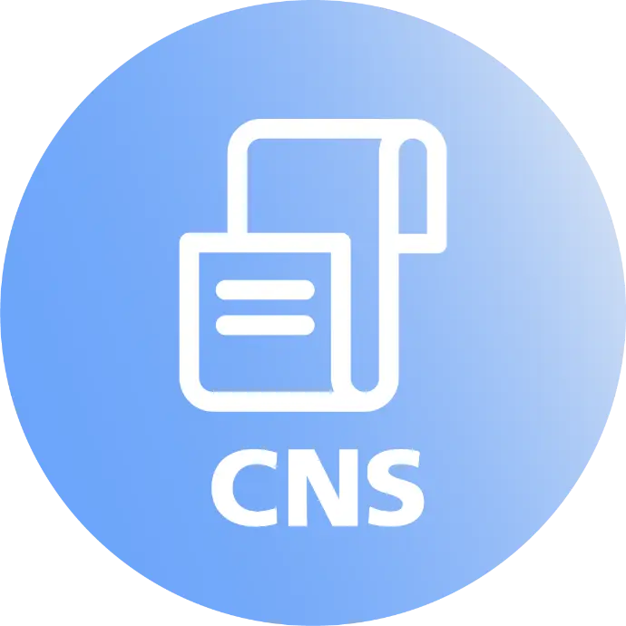

Subscription
90 €/month
- No commitment
- All inclusive
- Responsive support by email and phone
- Covered from the very first session

According to the French National Medical Board, independent practitioners spend an average of 20% of their working time on administrative tasks. For psychiatrists in private practice in Luxembourg, this represents valuable time taken away from patients each week. Sigmund — CNS-certified and PID-approved — centralises scheduling, invoicing and administrative management in one tool.
Accessible anytime from any device
Easy to use, no training required
Based on your needs and feedback
Data stored in Luxembourg

PID support: patients no longer pay upfront; CNS pays you directly
Manage expenses via financial dashboard
Export invoices without patient names
Support for multiple consultation addresses

Generated according to CNS standard format
Create in just one click
Add your own codes and treatment types
Simplified waiting list management
Securely save session notes and documents
Write prescriptions for your patients
Subscription
Online booking accessible directly to your existing patients
Calendar synchronisation with Google Calendar and Outlook
Enhanced security through LuxID
2013
The story begins
Our first developments were born from the desire to support an adult psychotherapist in her daily practice.
2013 – 2022
Continuous improvement
Over ten years, the application was enriched with new features specific to the daily needs of psychologists and psychotherapists.
2023
Application launch
With the arrival of psychotherapy reimbursement and repeated requests from colleagues, the application opened to all practitioners under the name Sigmund.
2024
PID support
CNS certification and implementation of PID (Immediate Direct Payment) support.
2025
Application development
Opening of Sigmund to psychiatrists.